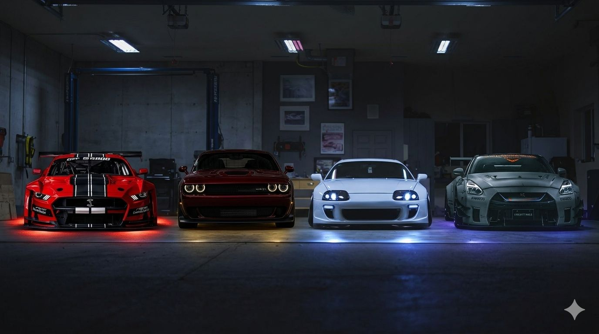
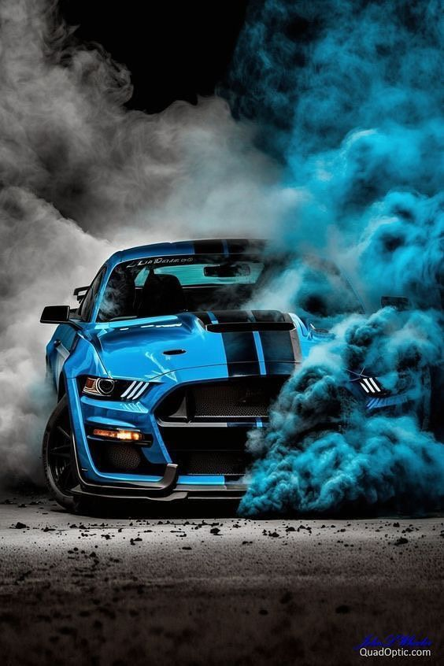
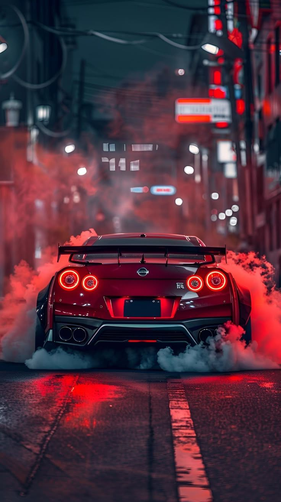

Estos son algunos de los carros que mas me han gustado a lo largo de mi vida y que representan uno de mis suenos a futuro. Cada uno tiene un diseno, una historia y una potencia que los hace especiales para mi.


Como primer lugar está el Ford Mustang. Este carro es una de mis principales metas en la vida. Es un carro deportivo muy famoso por su potencia y por su diseño clásico americano. Siempre me ha llamado mucho la atención su estilo agresivo y elegante al mismo tiempo. Cada vez que veo un Mustang o escucho el sonido de su motor, me imagino el día en que pueda tener uno propio. Para mí no es solo un carro, sino un símbolo de esfuerzo, dedicación y de los sueños que quiero lograr en el futuro trabajando duro y convirtiéndome en ingeniera de sistemas.
Como segundo carro está el Toyota Supra, una de las grandes leyendas de los carros japoneses. Este carro me empezó a gustar mucho cuando lo vi en el juego Need for Speed Most Wanted, donde descubrí lo increíble que puede llegar a ser. Me encanta este carro porque tiene un diseño muy deportivo y elegante, además de que es muy conocido por su gran capacidad para ser modificado y tuneado. Muchas personas lo consideran uno de los mejores carros japoneses de la historia.
Otro de los carros que me gustaría tener es el Dodge Challenger. Este es uno de los muscle cars más conocidos de Estados Unidos y destaca por su gran potencia y su diseño fuerte e imponente. Lo que más me gusta de este carro es su apariencia agresiva y su gran tamaño, que lo hacen ver muy poderoso. Además, su motor tiene un sonido muy característico que lo hace aún más impresionante.

Finalmente está el Nissan GT-R, uno de los carros japoneses más reconocidos en el mundo de los deportivos. Este carro es famoso por su increíble tecnología y su gran rendimiento en velocidad. Muchos lo conocen como "Godzilla" por su capacidad de competir con carros mucho más costosos y aún así tener un desempeño impresionante. El Nissan GT-R es un carro que admiro mucho por su ingeniería y por lo avanzado que es, lo cual también conecta con mi interés por la tecnología y por mi sueño de convertirme en ingeniero de sistemas.